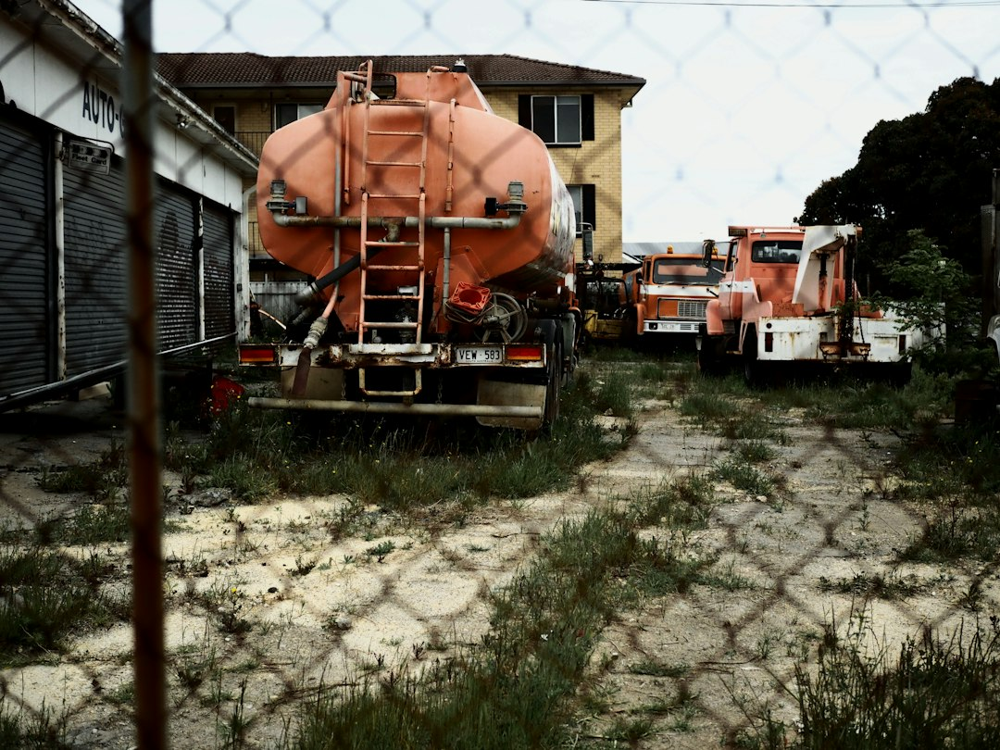

For Adelaide earthmoving work, the useful brief starts with the finished ground condition, measured access, known underground assets, spoil assumptions and the next trade's handoff requirements. The source page separates six project scopes: earth works, excavation, site cuts and land levelling, trenching and drainage, soil and spoil removal, and tight-access work. It also states that submitting site details does not confirm provider availability, timing or acceptance of the job.
For homeowners and project planners comparing earthmoving services adelaide options, the practical question is how clearly the site outcome, access route and material handling can be described before anyone quotes.
Earthmoving Services Adelaide Explained
Simply Earthworks frames the first decision around the result the next person must receive: a platform, fall, trench, cleared zone or material outcome. That is a useful way to brief Adelaide earthmoving because it shifts the conversation away from a vague machine request and towards the condition of the site when the operator leaves.
The brief should name what is being changed and what must stay intact. The source page asks for dimensions, supplied levels, access measurements, known services and a plan for excavated material. Those inputs do not replace inspection, design or professional advice, but they give a provider enough context to decide what needs checking before scope, price and timing are confirmed.
- Outcome: describe the finished profile, depth, fall, cleared area or handoff condition.
- Route: measure the path from street to work face, not just the narrowest gate.
- Unknowns: separate observed ground from anything that still needs locating, testing or design input.
Choose The Scope Before Asking For A Quote
The published guide separates broad ground work into six decisions because each one carries different responsibilities. Land shaping is not the same as digging to a nominated depth. A trench needs coordination with the following trade. Soil removal needs a material and receiving assumption, because loading and cartage are part of the job, not an afterthought.
Use the closest physical result as the starting point. Site cuts and land levelling relate to supplied levels, falls and formation. Trenching and drainage relate to narrow routes set to nominated lines and grades for the relevant licensed trade. Tight-access earthmoving is a planning problem around openings, turns, overhead limits and constrained spoil transfer. A separate Adelaide earthmoving planning guide can also help compare these decision points without turning them into one broad request.
Access Is A Whole Route, Not One Opening
Adelaide residential sites can vary sharply in the way machinery reaches the work face. The source page names CBD loading limits, inner-suburb gardens, coastal density, foothills slopes and northern growth areas as examples of planning contexts. Those labels do not prove soil type, rock, groundwater, contamination, underground assets or approvals at any specific property. They simply point to the questions that should be answered before equipment is nominated.
Measure the full operating route: gates, turns, eaves, gradients, surfaces, loading space and features that must remain intact. A machine fitting through one opening does not prove it can work in the available area or move spoil out efficiently. Photos and plans help, but the provider still needs to confirm the route and the work method against the actual site.
Spool Out Spoil, Stockpiles And Handoff Duties
Material handling should be visible in the quote request. The source page lists separation, stockpiling, loading, transport, receiving charges and imported material as quote assumptions to expose. For soil and spoil removal, the brief should state the expected material and the receiving assumption, while recognising that classification, cartage and lawful receiving requirements still need confirmation.
The handoff is just as important as the digging. Ask what profile will be achieved, whether testing or survey evidence is required, what reinstatement is included, and which party accepts the finished surface. For excavation ahead of another trade, the following contractor may need a nominated depth, line, grade or access condition, so those requirements should be supplied before work is priced.
Approvals, Services And Professional Advice
The source page is careful about approvals: development approval depends on the proposal, property and planning controls. It directs readers to check current PlanSA information and seek qualified advice where levels, drainage, retaining, heritage or other regulated matters may be affected. That wording is deliberately conditional, because an Adelaide address alone cannot answer the approval question.
Underground services need the same caution. The person controlling the work must arrange suitable asset information and site-specific controls. Public plans may not show private services or exact depth, so physical confirmation may also be required. Before booking machinery, ask who is responsible for service information, what documents are being relied on, and what happens if actual ground conditions differ from the assumptions in the written scope.
Who This Applies To
This guide is for homeowners, builders, landscapers and project organisers who need a clearer earthmoving brief before requesting a site-specific review in Adelaide. It suits small residential jobs when the location, access, dimensions, material and required outcome can be supplied, while noting that suitability and any minimum charges depend on the independent provider's written scope.
It is less useful for anyone trying to price a job from the suburb name alone. The published page says locality is context, not a ground report. A stronger enquiry gives the suburb or postcode, job type, approximate area or depth, material expectations, measured access, photos or plans and preferred timing, while avoiding sensitive documents unless a provider later asks for them.
- Name the result. Write the finished ground condition first, including any platform, fall, trench, cleared zone or material outcome required.
- Measure the route. Record gates, turns, overhead limits, surfaces, gradients and loading space from the street to the work face.
- Separate assumptions. List known services, supplied levels and visible conditions separately from unknowns needing confirmation.
- Describe spoil handling. State whether material may be stockpiled, loaded, removed or replaced, subject to provider confirmation.
- Request review. Send the suburb, job type, approximate dimensions, access details, photos or plans and preferred timing without sensitive documents.
| Need | Better starting scope | Key question to ask |
|---|---|---|
| Shape land around levels or falls | Earth works | What finished condition must the next trade receive? |
| Remove material to a defined profile | Excavation | What depth, area or dimensions are nominated? |
| Prepare a formation for building, landscaping or access | Site cuts and land levelling | Who supplies the levels and how is the result checked? |
| Create a narrow route for services or drainage | Trenching and drainage | Which licensed trade sets the line and grade? |
| Move excavated material off site | Soil and spoil removal | What material and receiving assumption is being used? |
| Work through constrained residential access | Tight-access earthmoving | Has the full route from street to work face been measured? |
Common questions
What is the difference between earthmoving and excavation? The source page defines earthmoving as broader shaping and preparation of ground. Excavation is the removal of material to a defined profile, area or depth, and one project may involve both.
Can small residential jobs be reviewed? Small jobs can be reviewed when the location, access, dimensions, material and required outcome are supplied. Suitability and minimum charges depend on the independent provider's written scope.
Does an Adelaide suburb tell me what method is needed? No. The source page says an Adelaide address is context, not a ground report, and does not prove soil, rock, groundwater, contamination, underground assets or approvals.
Who checks underground services before work begins? The person controlling the work must arrange suitable asset information and site-specific controls. Public plans may not show private services or exact depth, so physical confirmation may also be required.
This guide covers Adelaide earthmoving scope, access, spoil, approvals, services and quote inputs using the published Simply Earthworks page as its source.